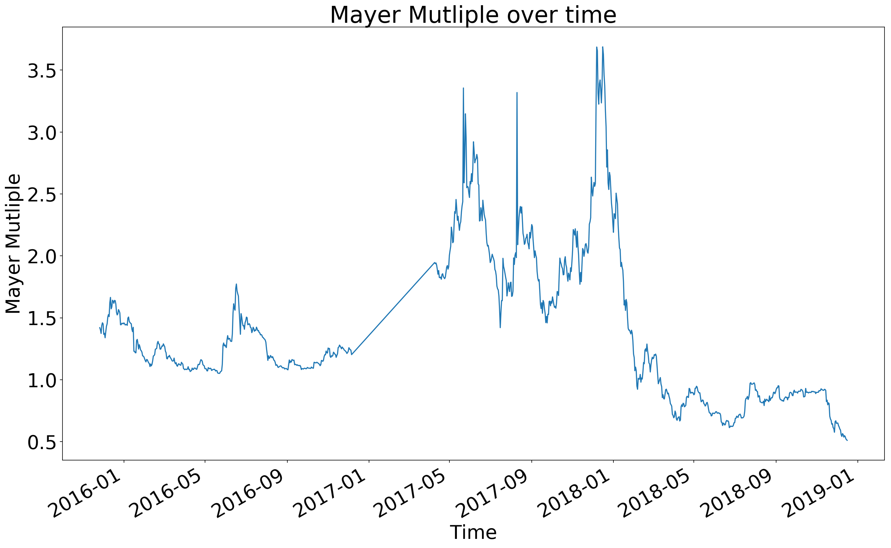
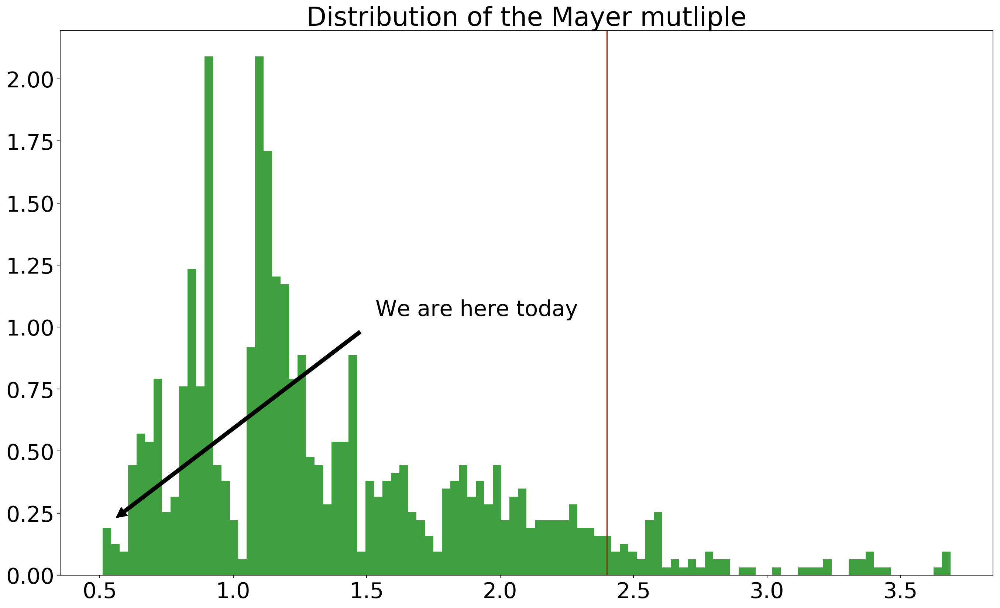

Computing the Mayer multiple
I've learnt about the Mayer mutliple from The Inverstor Podcast. The Mayer multiple is the ratio of the bitcoin price divided by the 200-day moving average. It is designed to understand the price of bitcoin without taking in account the short term volatility. It helps investors filter out their emotions during a bull run.
Let's see how to compute the Mayer mutliple in python.
First, we need to import the data, we will use Quandl to download data from coinbase
import quandl
btc_price_data = quandl.get("BCHARTS/COINBASEEUR")
btc_price_data.tail()
| Open | High | Low | Close | Volume (BTC) | Volume (Currency) | Weighted Price | |
|---|---|---|---|---|---|---|---|
| Date | |||||||
| 2018-12-12 | 2966.00 | 3076.71 | 2952.05 | 3026.00 | 1447.627465 | 4.372890e+06 | 3020.728514 |
| 2018-12-13 | 3025.19 | 3028.06 | 2861.15 | 2886.91 | 2125.242928 | 6.261750e+06 | 2946.369017 |
| 2018-12-14 | 2886.91 | 2919.00 | 2800.32 | 2835.50 | 2527.558347 | 7.256959e+06 | 2871.134083 |
| 2018-12-15 | 2835.49 | 2865.00 | 2781.47 | 2830.45 | 1267.004758 | 3.568614e+06 | 2816.575409 |
| 2018-12-16 | 2830.45 | 2830.45 | 2830.44 | 2830.45 | 0.144249 | 4.082886e+02 | 2830.447385 |
Next we need to compute the 200 days moving average of the price of bitcoin
moving_averages = btc_price_data[["Open" ,"High" ,"Low","Close"]].rolling(window=200).mean()
moving_averages.tail()
| Open | High | Low | Close | |
|---|---|---|---|---|
| Date | ||||
| 2018-12-12 | 5507.88295 | 5611.72570 | 5380.60150 | 5491.43610 |
| 2018-12-13 | 5491.44155 | 5595.14440 | 5363.77840 | 5474.38560 |
| 2018-12-14 | 5474.39910 | 5577.89585 | 5347.27500 | 5457.99125 |
| 2018-12-15 | 5457.94930 | 5559.49145 | 5330.78235 | 5439.75570 |
| 2018-12-16 | 5439.71660 | 5540.89425 | 5313.62955 | 5422.17700 |
Finally, we can compute the ratio and plot it.
%matplotlib inline
import matplotlib.pyplot as plt
plt.rcParams['savefig.dpi'] = 300
plt.rcParams['figure.dpi'] = 163
plt.rcParams['figure.autolayout'] = False
plt.rcParams['figure.figsize'] = 20, 12
plt.rcParams['font.size'] = 26
mayer_multiple = btc_price_data/moving_averages
mayer_multiple["High"].plot()
plt.title("Mayer Mutliple over time")
plt.ylabel("Mayer Mutliple")
plt.xlabel("Time")
print(f"Mayer multiple {mayer_multiple.iloc[-1]['High']}")
print(f"Mayer multiple average {mayer_multiple.mean()['High']}")
Mayer multiple 0.5108290958630005
Mayer multiple average 1.3789102045356179

Lastly, I wanted to plot the distribution of the Mayer multiple
import numpy as np
x = mayer_multiple["High"].values
x = x[~np.isnan(x)]
n, a, patches = plt.hist(x, 100, facecolor='green', alpha=0.75, density=True)
plt.axvline(x=2.4, color="red")
plt.annotate('We are here today',
xy=(mayer_multiple.iloc[-1]["High"],
n[(np.abs(bins-mayer_multiple.iloc[-1]["High"])).argmin()]),
xytext=(mayer_multiple.iloc[-1]["High"]*3,n.max()/2),
arrowprops=dict(facecolor='black', shrink=0.05),
)
plt.title("Distribution of the Mayer mutliple")
plt.plot()
[]
